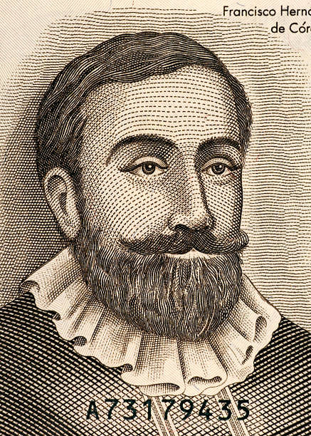
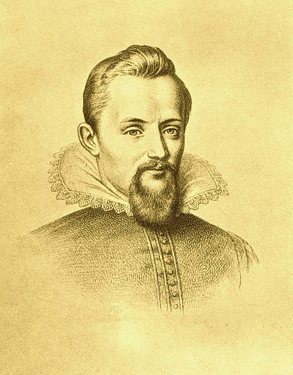

Galileo Galilei
Often referred to as the "father of modern science," Galileo Galilei revolutionized astronomy by turning a telescope toward the skies in 1609. He discovered Jupiter’s largest moons, observed the phases of Venus, and supported the Copernican heliocentric model, which contradicted church teachings. His work laid the foundation for modern observational astronomy and physics.
Johannes Kepler
Kepler was a key figure in the scientific revolution, best known for his laws of planetary motion. His mathematical laws accurately described how planets orbit the sun — not in perfect circles, but ellipses. Kepler's work provided crucial support for the heliocentric theory and helped pave the way for Newton’s theory of gravity.
Carl Sagan

A brilliant astrophysicist and gifted communicator, Carl Sagan made science accessible to the public through his books and the iconic TV series “Cosmos.” He worked on several NASA missions, including the Voyager program, and was instrumental in creating the Golden Record — a message to potential extraterrestrials. His quote, “We are made of star stuff,” inspired generations.
Stephen Hawking
Stephen Hawking was one of the most celebrated theoretical physicists of the 20th and 21st centuries. Known for his work on black holes and the nature of the universe, his theory of Hawking radiation proposed that black holes emit particles and can eventually evaporate. Despite being diagnosed with ALS at a young age, he became a symbol of human perseverance and intellect.